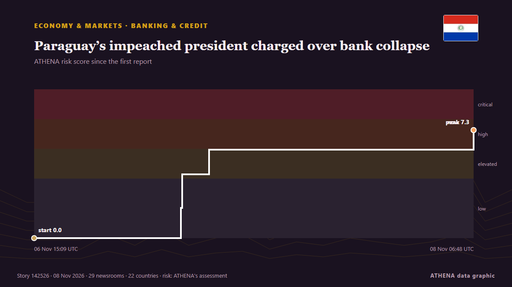

Οικονομία
Η παγκόσμια οικονομία σήμερα
Τελευταίο 24ωρο — γεγονότα: 53, χώρες: 36. Υψηλότερος κίνδυνος τώρα: 7.3 — Paraguay’s former president charged after bank collapse.

Οικονομία & ΑγορέςParaguay’s impeached president charged over bank collapse
Asuncion: Paraguayan officials put former President Santiago Peña under house arrest on Friday, shortly after lawmakers impeached him amid a political and financial crisis triggered by the collapse… από Deccan Herald
| 27 Οκτ | 42 |
|---|---|
| 28 Οκτ | 47 |
| 29 Οκτ | 47 |
| 30 Οκτ | 52 |
| 31 Οκτ | 21 |
| 1 Νοε | 24 |
| 2 Νοε | 58 |
| 3 Νοε | 55 |
| 4 Νοε | 41 |
| 5 Νοε | 48 |
| 6 Νοε | 24 |
| 7 Νοε | 18 |
| 8 Νοε | 19 |
| 9 Νοε | 20 |
Παρακολούθηση
Τελευταία
Cyberattack Hits French Blood Bank Site but No Blood Products Are Compromised
A cyberattack on several blood banks tried to raise temperatures to extremely high levels but was thwarted before it could do any damage to blood products or samples, French authorities said. από Korea Herald
Pope urges Argentina's Milei to put people before economy
Pope Leo XIV has urged Argentina to protect democracy and ensure economic growth benefits the poor, delivering a message to President Javier Milei over austerity, social welfare and political… από DW English
UN probe accuses Israel of 'extermination' in West Bank
GENEVA, Switzerland — Israel has committed the crime against humanity of "extermination" in the West Bank, while continuing to commit "genocide" against Palestinians in the Gaza Strip, United… από The Korea Times
Tesla to refund Cybertruck deposits as demand exceeds production
CEO Elon Musk made the announcement as the electric vehicle maker said it was winding down production of the pickup truck at its Texas factory. από Free Malaysia Today
China's giant pandas make public debut at US zoo
The pair are to be hosted in the southern US facility for the next 10 years. από The Straits Times
Barclays bank to cut about 5,000 jobs amid AI drive
LONDON: British bank Barclays announced Thursday plans to cut around 5,000 jobs, or roughly five percent of its global workforce, by the end of 2026 in an AI efficiency drive. από Business Recorder
Israeli settler attacks on West Bank olive harvest hit record since 2006, UN says
The alleged incident follows an IDF raid on an illegal West Bank outpost on Wednesday. από The Jerusalem Post
Israel kills Palestinian in Gaza, seizes eight homes in occupied West Bank
Israeli attacks target several areas of Gaza as Palestinian authorities report new homes and more than 620 acres of land near Ramallah seizures in occupied West Bank. από TRT World
US Fed holds interest rates steady despite 'too high' inflation
The US Federal Reserve is expected to keep interest rates unchanged in its upcoming meeting next week. από Times of India
Jordan's king says 'no security or stability' in region without Palestinian homelan
Jordan’s King Abdullah II on Monday said there would be no security in the Middle East region until the Palestinians’ right to a homeland is fulfilled. από Hespress English
Fed Hike Bets Lift Dollar After Strong US Jobs Data | Global Economy, Nov 9
KUALA LUMPUR: Bank Negara Malaysia may be nearing a turning point in its monetary policy as stronger economic growth fuels calls to normalise interest rates after a prolonged period of support for… από New Straits Times
French bank hit by €100 million cyber attack recovers some funds
French banking firm Crédit Mutuel Arkéa said it was the target of a cyberattack on Wednesday, with hackers converting over €100 million into cryptocurrency. από Le Monde (English)
Τι καλύπτει η σελίδα
Η σελίδα παρακολουθεί τα γεγονότα που κινούν την παγκόσμια οικονομία: ανάπτυξη, πληθωρισμό, επιτόκια, κεντρικές τράπεζες, δημόσιο χρέος, απασχόληση και εμπόριο. Κάθε γεγονός ελέγχεται σε ανεξάρτητα μέσα και βαθμολογείται για κίνδυνο· ισχυρισμός από μία μόνο πηγή δεν παρουσιάζεται ως γεγονός.
Διαβάστε την μαζί με τις Αγορές, που δείχνουν τι έκαναν οι τιμές, και με τη Ναυτιλία, που δείχνει τι συμβαίνει στις εμπορικές διαδρομές και στον ενεργειακό εφοδιασμό. Μαζί δείχνουν πώς ένα πολιτικό γεγονός φτάνει στο χρήμα και στα αγαθά.
Τι παρακολουθούμε
- Αποφάσεις κεντρικών τραπεζών και πορεία επιτοκίων
- Στοιχεία πληθωρισμού, ανάπτυξης και απασχόλησης
- Τιμές και προσφορά ενέργειας
- Δημόσιο χρέος και πιστοληπτικές αξιολογήσεις
- Δασμοί, εμπορικά μέτρα και κυρώσεις
- Η ελληνική και η κυπριακή οικονομία